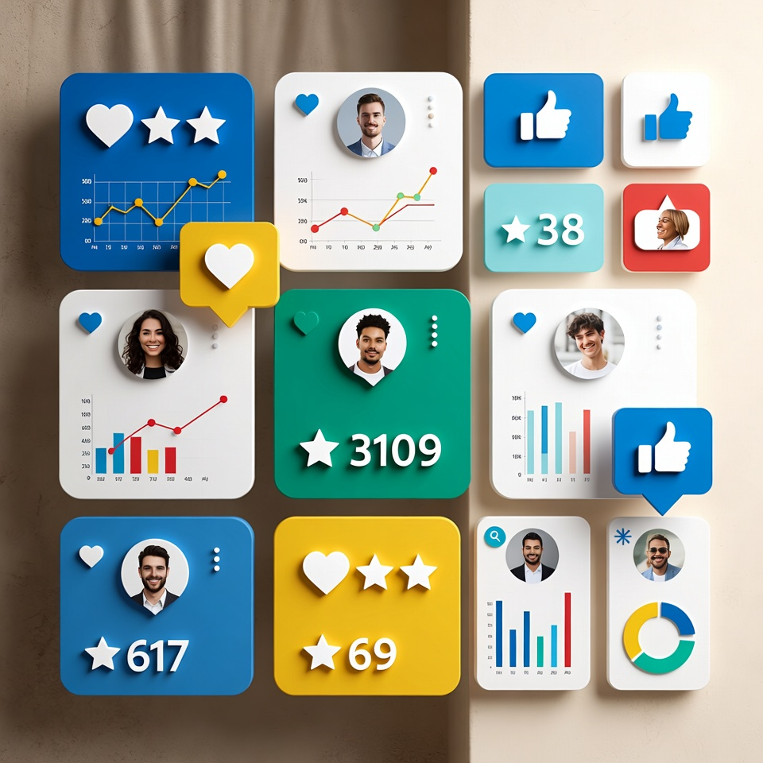
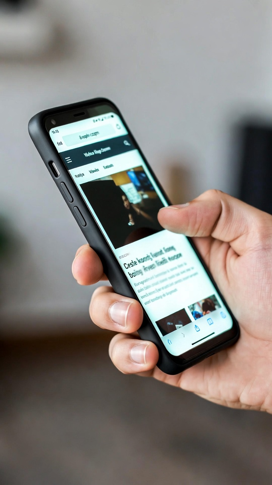
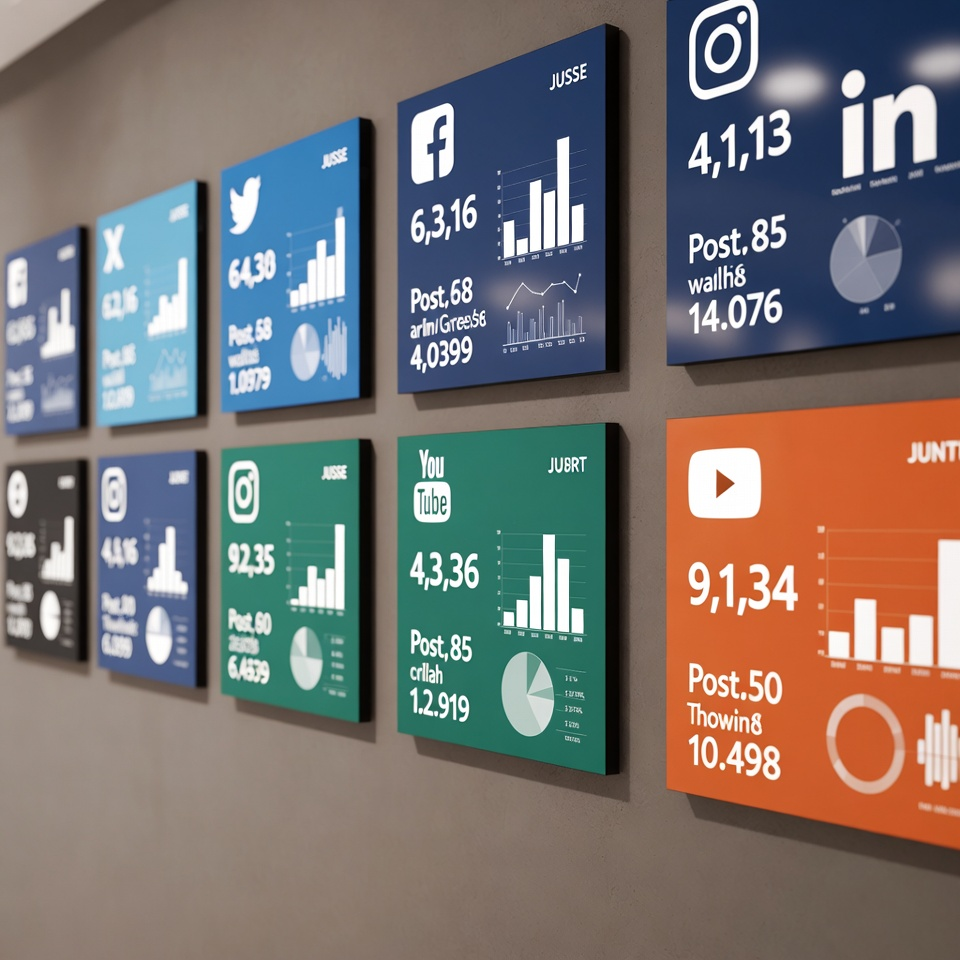

Assessoria de Imprensa
Mais de uma década contando novidades, histórias verdadeiras e de sucesso.
Experiência nas relações com a imprensa para empresas de diversas áreas — desde veterinária até automotiva.
Mais de uma década contando novidades, histórias verdadeiras e de sucesso.
Experiência nas relações com a imprensa para empresas de diversas áreas — desde veterinária até automotiva.
Como especialistas em comunicação, trabalhamos para aumentar sua presença nos meios de comunicação relevantes. Vamos construir e manter uma imagem positiva na mídia e alcançar seu público-alvo de maneira eficaz em um ambiente bastante competitivo.
Aumento da Visibilidade: Através da cobertura da imprensa, a empresa ganha mais exposição para seu público, sem a necessidade de gastar com anúncios.
Reforço da Credibilidade: Uma presença positiva na mídia aumenta a confiança dos clientes e parceiros em sua marca.

Aumento da exposição sem gastar com anúncios pagos

Construção consistente de presença no mercado
Presença positiva na imprensa fortalece a confiança

Clientes e parceiros enxergam sua empresa como referência
Soluções completas e estratégicas para posicionar sua marca onde realmente importa.
Criamos releases para promover seus produtos, serviços, eventos ou conquistas, desde lançamentos, novas aplicações até participações em eventos.
Envio estratégico e segmentado para a imprensa certa, com abordagem personalizada para cada jornalista e veículo.
Acompanhamento da cobertura midiática para avaliar o impacto das estratégias e identificação de oportunidades.
Contato regular com jornalistas, editores e influenciadores do seu setor para garantir uma cobertura positiva e relevante, sugerindo pautas e entrevistas com um porta-voz da empresa.